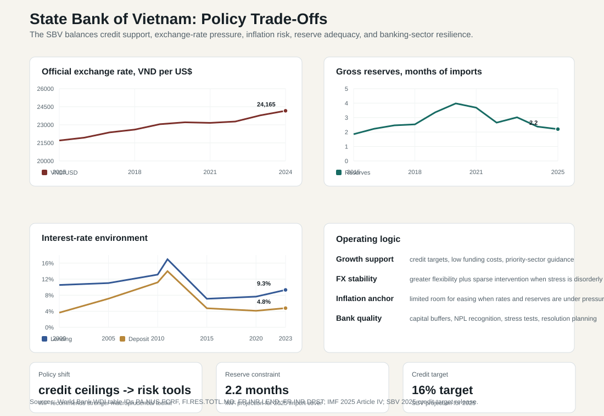

14.2 State Bank of Vietnam and Financial Supervision
ASEAN comparative lens (2026). Vietnam should be read in ASEAN comparison as ASEAN's most prominent party-led, export-manufacturing upgrading case. Unlike the Philippines' service-remittance profile, Thailand's older industrial-tourism base, Malaysia's resource-industrial federal structure, or Indonesia's archipelagic domestic-market scale, Vietnam's comparative issue is how a socialist party-state manages very open global production networks. For this section, the regional comparison should compare monetary credibility, banking depth, private credit, capital markets, digital payments, and financial inclusion across ASEAN financial systems. Local comparable indicators show: population 100.99 million (2024), rank 3 among the nine ASEAN reports in this workspace; GDP US$476.39 billion (2024), rank 4 among the nine ASEAN reports in this workspace; GDP per capita US$4,717 (2024), rank 5 among the nine ASEAN reports in this workspace; real GDP growth 7.09% (2024), rank 1 among the nine ASEAN reports in this workspace; government effectiveness 0.09 (2023), rank 6 among the nine ASEAN reports in this workspace; internet use 84.15% (2024), rank 4 among the nine ASEAN reports in this workspace. Use `sources/documents/regional/asean_comparative_lens_2026.md` together with ASEANstats, ASEAN Secretariat materials, and the country processed-indicator files before making cross-ASEAN claims.
The State Bank of Vietnam is both a central bank and a developmental regulator. It manages monetary policy, bank supervision, payment systems, exchange-rate pressure, liquidity conditions, and financial stability in an economy where credit growth remains closely connected to state growth objectives. Its institutional position is therefore different from a central bank in a fully liberalized financial system. The SBV must support growth while preventing inflation, exchange-rate instability, bank weakness, and disorderly financial adjustment.

14.2.1 Institutional Mandate
The SBV implements monetary policy, issues currency, regulates credit institutions, supervises banking safety, manages payment infrastructure, and helps maintain financial stability. Under the 2024 Law on Credit Institutions, credit institutions are subject to licensing, internal control, risk-management, safety, early-intervention, special-control, restructuring, dissolution, bankruptcy, and nonperforming-loan rules.[1] The law also strengthens the legal basis for handling nonperforming loans and collateral, which is crucial after the real-estate and corporate-bond stress of recent years.
Vietnam's financial supervision is administratively complex. The SBV supervises banks and payment institutions; the Ministry of Finance and State Securities Commission oversee securities and corporate bonds; deposit insurance, inspection, audit, police, courts, and local authorities can all become relevant when financial distress turns into legal or social conflict. This means that financial stability is an interagency coordination problem, not only a central-bank technical problem.
14.2.2 Monetary Policy Instruments
The SBV uses several instruments: policy rates, open-market operations, refinancing, reserve requirements, liquidity management, interest-rate guidance, credit-growth management, foreign-exchange intervention, and regulatory instructions to credit institutions. Although Vietnam has developed more market-based instruments, administrative tools still matter. This reflects both the structure of the financial system and the political importance of credit for growth.
The IMF argues that Vietnam should modernize its monetary policy framework by strengthening SBV operational independence, streamlining tools, improving communication, moving toward an interest-rate corridor, phasing out remaining rate caps, and replacing credit-growth ceilings with a sound macroprudential framework.[2] The reason is not theoretical neatness. A clearer framework would help markets understand how the SBV weighs inflation, exchange-rate pressure, liquidity, and growth. That improves policy credibility when external conditions are unstable.
14.2.3 Exchange Rate Management
The Vietnamese dong is managed with attention to inflation, export competitiveness, reserves, capital flows, and financial stability. This makes exchange-rate policy one of the SBV's most difficult tasks. In 2024 the dong depreciated against the U.S. dollar, while reserves fell as capital outflows reflected the interest-rate differential with the United States. The IMF reported that gross reserves fell to 2.4 months of prospective goods-and-services imports in 2024 and projected about 2.2 months in 2025.[2]
This reserve position limits the room for heavy foreign-exchange intervention. If the SBV keeps domestic rates low to support growth while global rates are high, exchange-rate pressure can intensify. If it raises rates too much, domestic borrowers and real estate-linked firms may face stress. If it uses reserves aggressively, external buffers weaken. The IMF therefore emphasizes greater exchange-rate flexibility as a shock absorber, while using temporary foreign-exchange intervention sparingly under severe disorderly conditions.[2]
14.2.4 Interest Rates and Credit Conditions
Vietnam's lending and deposit rates have generally declined from the high-rate periods of the 2000s and early 2010s, but rates remain cyclical. WDI data show the average lending rate rising to about 9.3 percent in 2023 after lower levels in 2020-2021. Rate levels by themselves tell only part of the story. What matters is the alignment among real rates, credit quantity, borrower risk, and macroeconomic conditions.
Low rates and strong credit growth can support firms, investment, and households. But in a system with high credit-to-GDP, real-estate exposure, and thin capital buffers, low rates can also preserve weak borrowers and encourage refinancing rather than restructuring. This is the "evergreening" risk: loans appear current because liquidity is available, while underlying borrower cash flow remains weak. Effective supervision must therefore look beyond official NPL numbers toward restructured loans, collateral values, interest coverage, related-party lending, and sector concentration.
14.2.5 Supervision, NPLs, and Bank Capital
The IMF estimates that the on-balance-sheet NPL ratio declined from a peak of 5.9 percent in September 2023 to 5.3 percent in March 2025, but remained well above the 2.3 percent level of 2022.[2] This suggests improvement but not normalization. NPL statistics are also sensitive to loan restructuring, collateral valuation, classification rules, and bank incentives. A system can appear stable if weak loans are restructured or collateral is assumed to retain value; stress becomes visible when refinancing stops or collateral must actually be sold.
Capital is the second vulnerability. IMF data show public-bank capital adequacy at 10.4 percent and private-bank capital adequacy at 12.1 percent, below many peers.[2] Low capital reduces the system's ability to absorb losses without restricting credit or requiring public support. The problem is especially important for state-owned commercial banks because they carry large assets and policy responsibilities but have thinner charter-capital capacity relative to their role.
14.2.6 Crisis Preparedness and Problem Banks
Vietnam's recent financial turbulence shows why crisis preparedness matters. The SBV took over Saigon Commercial Bank in 2022, and IMF reporting notes that SBV claims on credit institutions expanded substantially afterward.[2] The authorities have also made progress in resolving several small banks that had failed years earlier. These cases show both state capacity and institutional gaps: Vietnam can intervene, but resolution can be slow, costly, and legally complex.
The reform agenda should include a formal financial-stability function, better interagency coordination with the Ministry of Finance, emergency liquidity assistance rules, resolution financing, stronger deposit insurance, bank recovery plans, and clearer resolution tools. These are not technical details reserved for specialists. They determine whether a banking problem becomes a fiscal burden, a social panic, or a managed restructuring.
14.2.7 Supervision as Administrative Capacity
Financial supervision is a form of administrative capacity. It requires data quality, supervisory independence, stress-testing skill, legal authority, enforcement credibility, and coordination across agencies. Vietnam's challenge is that financial innovation, corporate groups, real estate, bond markets, banks, fintech, and crypto assets are moving faster than traditional supervisory routines. The IMF specifically calls for better systemic-risk monitoring, stronger macroprudential tools, regular financial stability reporting, and improved AML/CFT and crypto-asset frameworks.[2]
For this book's broader argument, the SBV is an example of the Vietnamese administrative state under pressure. It must operate inside party-state development priorities, manage market confidence, support high growth, and contain risks that can become politically sensitive. The quality of SBV supervision therefore affects not only finance, but also industrial policy, public investment, housing, social trust, and macroeconomic legitimacy.
[1]: https://english.luatvietnam.vn/tai-chinh/law-on-credit-institution-no-32-2024-qh15-296639-d1.html "Law on Credit Institutions No. 32/2024/QH15"
[2]: https://www.imf.org/en/publications/cr/issues/2025/10/03/vietnam-2025-article-iv-consultation-press-release-staff-report-and-statement-by-the-570895 "IMF, Vietnam: 2025 Article IV Consultation"